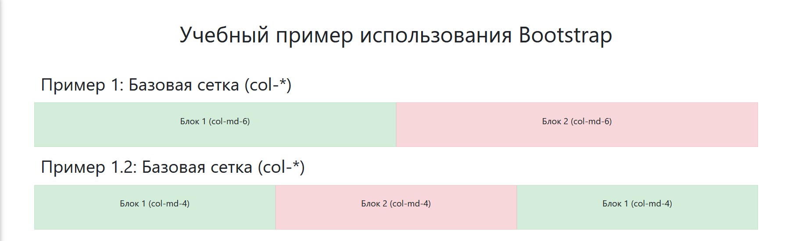
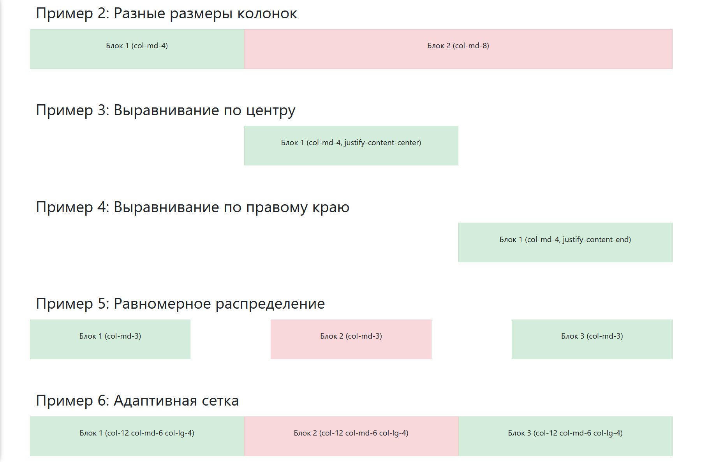

Задание: Практика выравнивания контента в Bootstrap
Вспомните и примените на практике различные способы выравнивания контента, используя учебник и официальную документацию Bootstrap:
Официальная документация Bootstrap
Цель задания:
- Изучить основные классы Bootstrap для выравнивания контента (текста, изображений, блоков).
- Научиться использовать Flexbox-утилиты Bootstrap для создания адаптивных макетов.
- Применить полученные знания для верстки сайта по образцу.

